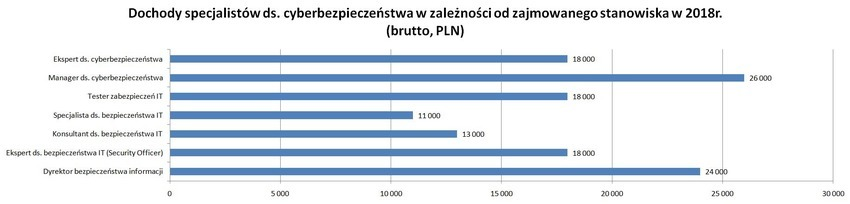

SPECJALISTA DS. CYBERBEZPIECZEŃSTWA
Informatycy, a szczególnie specjaliści ds. cyberbezpieczeństwa nawet w dzisiejszych czasach nie mogą narzekać na brak pracy. Sektor cyberbezpieczeństwa jest najbardziej pożądanym obszarem na rynku pracy na całym świecie. W związku z rozwojem technologicznym, cyberataki stają się coraz bardziej powszechne i niebezpieczne. Żadna firma posiadająca stronę internetową nie jest na nie odporna. Z tego powodu liczba miejsc pracy w tej profesji będzie się zwiększać. Według Bureau of Labor Statistics, między 2012 a 2022 rokiem ilość posad dla specjalistów do spraw cyberbezpieczeństwa zwiększy się aż o 37%, czyli o znacznie więcej niż w większości zawodów.
Specjalista ds. cyberbezpieczeństwa odpowiada za zarządzanie listą uprawnień dostępu do systemów oraz zabezpieczenie ich przed dostępem zewnętrznym.

*Opracowanie własne na podstawie danych z Przeglądów Wynagrodzeń, Michael Page, 2018